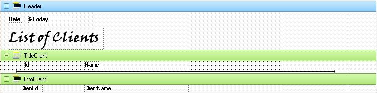

To define the header lines to be printed at the top of each page.
SyntaxHeadercode End Where: code Sequence of valid language commands. DescriptionThe first group in the Procedures default Source is the Header Group. Data within the Header level is printed at the beginning of each page of the report. The Header Group is optional. If no Header is specified, then no page header is printed. A header can also be defined for every "For each" group defined in the Source. This causes the Header associated with the current For each group, and all Headers specified for all above nested groups, including the Main Header (the one defined for the Report/Procedure) to be printed after a page is ejected. ExampleWe want to define a report listing all clients. A main report/procedure Header is defined and another Header is defined for the For each - Endfor group which, when executed, will scan over the Clients table. For every page jump, both headers are printed. SourceHeader Print Header End For each Header Print TitleClient End Print InfoClient Endfor Layout ScopeObjects: ProceduresLanguages: .NET, Ruby (up to GeneXus X Evolution 3), Java, RPG, Visual Basic (up to GeneXus X Evolution 3), Visual FoxPro (up to GeneXus X Evolution 3), Cobol See Also
|
| Backlinks | |
| Footer Command | Procedure Layout |